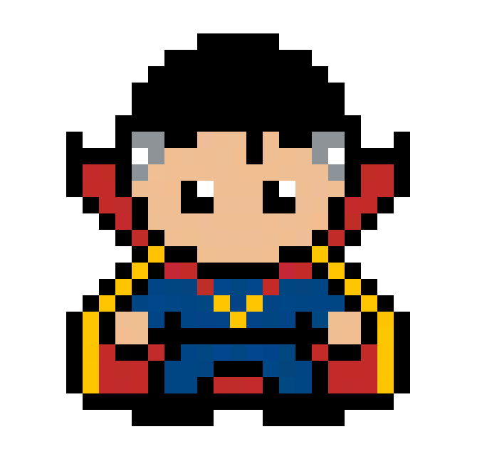

TIME COMPLEXITY
01. S.H.I.E.L.D. MISSION BRIEFING // OP-STRANGE-02 THE 14,000,605 TIMELINES CRUCIBLE
02. FORMAL PROBLEM SPECIFICATION & INVARIANTS ACADEMIC CURRICULUM
Time Complexity quantifies the number of elementary operational steps executed by an algorithm as a function of the input size \(n\). Rather than measuring clock milliseconds (which vary widely based on hardware architecture, CPU clock speed, compiler optimizations, and background operating system processes), Design and Analysis of Algorithms counts primitive operations (comparisons, arithmetic operations, assignments, and pointer dereferences).
DAA classifies execution complexity across three canonical scenarios:
- Worst-Case Time (\(T_{ ext{worst}}(n)\)): The maximum number of steps executed over any input of length \(n\). Provides a mathematical guarantee that the algorithm will never exceed this bound.
- Best-Case Time (\(T_{ ext{best}}(n)\)): The minimum number of steps executed on the most favorable input configuration.
- Average-Case Time (\(T_{ ext{avg}}(n)\)): The expected step count averaged over all valid inputs according to a defined probability distribution (commonly uniform).
03. BRUTE FORCE VS ALGORITHMIC OPTIMALITY STRATEGIC COMPARISON
Consider locating a target element inside a sorted sequence of \(n = 1,000,000\) elements. A naive Linear Scan inspects each index one by one, requiring up to \(1,000,000\) steps in the worst case. Doctor Strange's Binary Search halves the temporal dimension on every comparison, finding any element in at most \(\lceil \log_2(1,000,000) ceil = 20\) steps.
\(n = 10^6 \implies 1,000,000 ext{ steps}\)
Unbearable latency on big data pipelines; redundant scans through sorted sequences.
\(n = 10^6 \implies 20 ext{ steps}\)
Exponential speedup; instantaneous lookup even across billions of records.
04. MATHEMATICAL PROOFS & RECURRENCES KATEX FORMULATION
For nested loop structures where inner loops execute \(j\) times:
\[ T(n) = \sum_{i=1}^{n} \sum_{j=1}^{i} c = c \cdot \sum_{i=1}^{n} i = c \cdot \frac{n(n+1)}{2} = \frac{c}{2}n^2 + \frac{c}{2}n \implies \Theta(n^2) \]Asymptotic Dominance Hierarchy (from fastest to slowest):
\[ O(1) < O(\log \log n) < O(\log n) < O(\sqrt{n}) < O(n) < O(n \log n) < O(n^2) < O(n^3) < O(2^n) < O(n!) \]05. STEP-BY-STEP WORKED CALCULATION EXAMPLE NUMERICAL TRACE
Scenario: Calculating exact operations for a 2-level nested loop matrix comparison routine with \(n = 500\).
- Outer Loop: Executes \(i\) from \(0\) to \(n-1\) (\(500\) iterations).
- Inner Loop: For each \(i\), executes \(j\) from \(i+1\) to \(n-1\).
- Total Step Sum: \[ \sum_{i=0}^{n-1} (n - 1 - i) = (n-1) + (n-2) + \dots + 1 + 0 = rac{(n-1)n}{2} \]
- Plugging in \(n = 500\): \[ ext{Operations} = rac{499 imes 500}{2} = 124,750 ext{ comparisons}. \]
- Asymptotic Term: Dropping lower-order components (\(- rac{n}{2}\)) and coefficients yields \(\Theta(n^2)\).
06. RETRO PHYSICAL GAME SIMULATION & YOUR CUSTOM INPUTS LIVE SIMULATION CONSOLE
Step through the mystic portals to calculate step counts across logarithmic, linear, and quadratic timelines.
07. ASYMPTOTIC COMPLEXITY DERIVATION MATRIX DAA BIG-O BOUNDS
| OPERATION / CASE | ASYMPTOTIC BOUND | SPACE / FOOTPRINT | MATHEMATICAL INVARIANT |
|---|---|---|---|
| Array Index Access / Push | O(1) | Omega(1) | Single offset memory calculation |
| Binary Search | O(log n) | Omega(1) | Halves problem size at each step; best case target at mid |
| Linear Scan | O(n) | Omega(1) | Inspects up to n elements sequentially |
| Merge Sort / Heap Sort | O(n log n) | Omega(n log n) | Optimal comparison-based sorting lower bound |
| Bubble Sort / Selection Sort | O(n^2) | Omega(n) / Omega(n^2) | Pairwise element comparisons across nested loops |
| Subset Sum (Brute Force) | O(2^n) | Omega(2^n) | Examines power set of all 2^n combinations |
08. ASYMPTOTIC GROWTH COMPARISON LIVE CALCULATOR
Drag the input size slider \(n\) to observe step counts diverge across complexity classes in real-time:
09. PRACTICAL SYSTEMS DESIGN & REFERENCE IMPLEMENTATION PRODUCTION ARCHITECTURE
1. Constants Matter in Real Life: Asymptotic Big-O notation suppresses constant factors (\(c\)). An \(O(n)\) algorithm with \(c = 10,000\) may run slower than an \(O(n^2)\) algorithm with \(c = 1\) for \(n < 10,000\). The crossover point dictates algorithm selection in high-performance engines.
2. Worst-Case Guarantees in Mission-Critical Systems: In real-time aviation, pacemaker controls, and Marvel defense grids, average-case time is insufficient. One must guarantee worst-case polynomial bounds (\(T_{ ext{worst}}\)) to prevent deadlocks.
3. Amortized Time Analysis: Operations like dynamic array resizing (vector.push_back) take \(O(n)\) occasionally to reallocate memory, but \(O(1)\) across \(n\) sequential calls, yielding an amortized time of \(O(1)\).
def find_pair_with_sum(arr: list[int], target: int) -> tuple[int, int] | None:
"""
Demonstrating O(n) Two-Pointer Time vs O(n^2) Nested Loop Time.
Assumes sorted input array.
"""
# OPTIMAL O(n) TWO-POINTER APPROACH:
low = 0
high = len(arr) - 1
while low < high:
current_sum = arr[low] + arr[high]
if current_sum == target:
return arr[low], arr[high] # O(1) best case
elif current_sum < target:
low += 1 # Move lower boundary up
else:
high -= 1 # Move upper boundary down
return None # Worst case O(n) steps10. MISSION ASSESSMENT // TEST YOUR MASTERY
Test your mastery of TIME COMPLEXITY with these university exam questions:
11. S.H.I.E.L.D. DEBRIEF & KEY EXAM TAKEAWAYS REVISION CHECKLIST
Mastering time complexity allows you to predict whether an algorithm will complete in microseconds or require centuries. In technical interviews and exams, always define the dominant term and ignore lower-order coefficients.